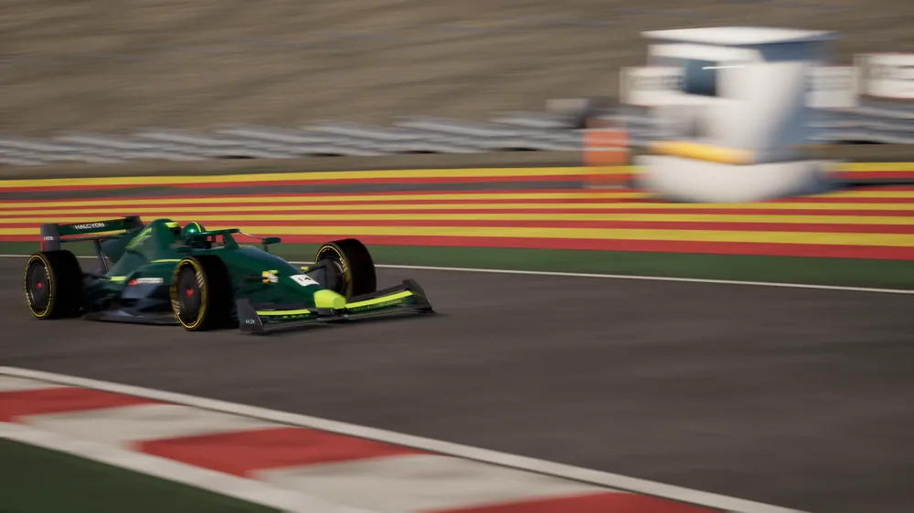
One deterministic simulation at 420 Hz, on the server. The client draws what it says and has no physics of its own, your car included.
Every car is solved from its tyres outward, every tick, on the same road the game draws.
Weight moves front to back under braking and power, and to the outside in a corner, through each axle's roll centre and its springs and bars. Fuel rides on top of the car's mass, so the balance moves as the tank drains.
Each tyre's force comes from its slip, its load and its grip, with load sensitivity and a friction circle shared between braking, power and cornering.
Camber that changes with roll and the linkage's gain, toe front and rear, camber thrust, roll centres and bump stops. A car with no geometry keys drives as it always did.
Open, locked, clutch, viscous or Torsen, each splitting torque between the wheels the way its type does once one tyre cannot carry half.
The server drives on the rendered road mesh: kerbs five centimetres tall in the physics too, a crowned road with bumps, run-off that is tarmac, and two levels where a circuit crosses itself.
The road's curvature along the car's path loads or unloads it: a crest lightens the car and, fast enough, lifts it off the ground; a banked turn presses it down.
Grass, gravel and sand each grip and drag the car their own way. A gravel trap bogs a car down and throws dust behind it.
Cars collide as boxes, with an impulse from their real masses; every barrier, stand and building is a wall the car stops against. Nothing off the road is decorative.
No random numbers and no clock in the simulation: a seeded race replays identically, guarded by a test that asserts it.
Grip is a temperature, a pressure and a state of wear, and all three move from the first lap to the last.
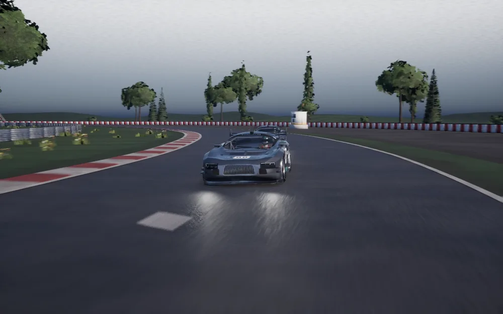
Each tyre is a tread in three zones from shoulder to shoulder and a core, conducting between them. Slip heats them, the air and the road cool them; a hot shoulder costs its own grip even when the average is right.
The pressures you set are the hot ones: a cold tyre is soft, a cooked one over-inflated, and both cost grip.
Full grip inside the compound's window, less outside it, the cold side gentler than the hot. An overheated tyre comes back over a couple of gentle laps.
Tyres wear with the energy they slide away, faster when hot, and lose grip slowly until a cliff at the end of their life.
Hold a lock-up and the tyre flat-spots, felt in the wheel and heard on the road. Drive through the marbles and the tyre picks them up for most of a lap. A hard hit can puncture it.
Soft, medium and hard slicks, intermediates and wets, each with its own grip, wear and window; a rally car's studs on snow. A slick in the rain costs what it should.
Wets and intermediates carry their tread and a coloured ring, a worn tyre streaks, a flat spot glazes and a puncture sits the car down.
Aero follows the car's attitude and the air around it, so a setup, a crest or the car ahead all change what the wings make.
Ride height is worked out from the loads on the springs, and the downforce follows it: more as the floor nears the road, given back when it stalls; more rake moves the balance forward.
A car sliding or rolling loses some of its downforce, so a moment sideways costs grip just when it is needed.
A floor run too close to the road at speed can start to bounce, building over half a second and dying away when the car rises.
Up to a third less drag right behind another car, fading with the gap; dirty air takes up to a quarter of the downforce, most of it off the front.
On the formula cars, crossing a detection line within a second of the car ahead arms the flap for the zone. Not in the rain, not on the opening laps.
The air's density at the circuit's altitude, temperature and humidity scales the downforce, the drag and a naturally aspirated engine's power; a turbo keeps most of its.
The brakes and the engine are thermal masses: what you do with them on one lap shows on the next.
Each disc is heated by what its pads absorb and cooled through a duct you size in the garage. A locked wheel heats its tyre, not its disc.
Carbon is weak when cold and at its best from 400 to 900 °C; steel bites from cold and fades past its window.
Endurance pads last, sprint pads bite harder. Pads wear with the energy they absorb; a disc run hot wears and holds less heat, and a stop can change both.
A radiator sized per car cools the engine through the air the car meets, less of it in a long tow. Past its limit the engine gives up power and takes damage.
Hours at racing revs wear an engine, and an over-rev on a missed downshift can finish it in a second.
Fuel is burned by the power the engine makes; a hybrid's battery is a budget to spend.
The burn follows the power the engine makes and its efficiency; a lift burns idle only. The race fill is worked out from the car's own lap, with a margin.
Fuel's weight sits on the car where its tank is, so a full car and an empty one handle differently.
Harvest, balanced and attack, a lap budget and an overtake button. Balanced paces the battery over the lap rather than spending it on the first straight.
A hybrid recovers energy from the axle it drives; with brake by wire the pedal feels the same while the discs run cooler.
A panel tells you how many laps the battery lasts at this pace.
Contact is scored by closing speed across five zones, and each zone costs the car what it would.
Front, rear, left, right and engine. Nothing under a walking bump; a hard hit at speed takes a big share at once, and a zone at 100% ends the race.
A bent nose loses downforce and radiator flow, a damaged flank pulls the steering, a hurt engine loses power.
A kerb struck hard costs its side, a car bottoming out its end, a landing off a crest both.
Panels dent and scuff, wings and noses come off, debris stays on the road, and a hurt engine trails smoke.
Full, reduced or no damage, per session. A pit stop repairs it.
The host picks the weather, the hour and the day; the server bakes its grip and its air into the session, so physics, AI and the racing line all follow.
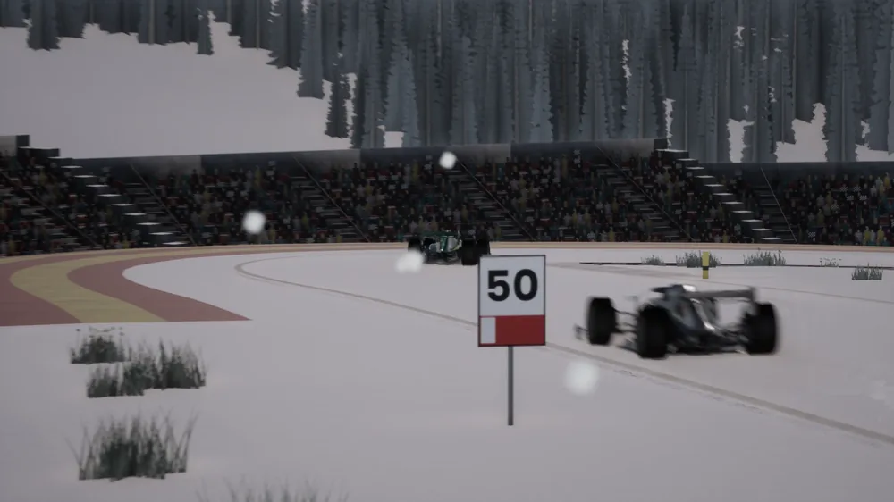
Sunny, cloudy, overcast, light rain, heavy rain and snow, at any hour on any day of the year, with an air temperature from -5 to 45 °C.
Let the clock run, up to sixty times real time, and the weather can change with it, or follow a forecast the host writes.
A mean wind from a direction, gusting about it, felt in every car's aero down the straights and through the corners.
A still, clear night lays dew and a radiation fog the morning sun burns off.
The HUD's radar shows the next shower drifting in on the wind.
Floodlights and headlights come on as the light goes.
The surface keeps a memory of the race, and the server sends it to the game to paint.
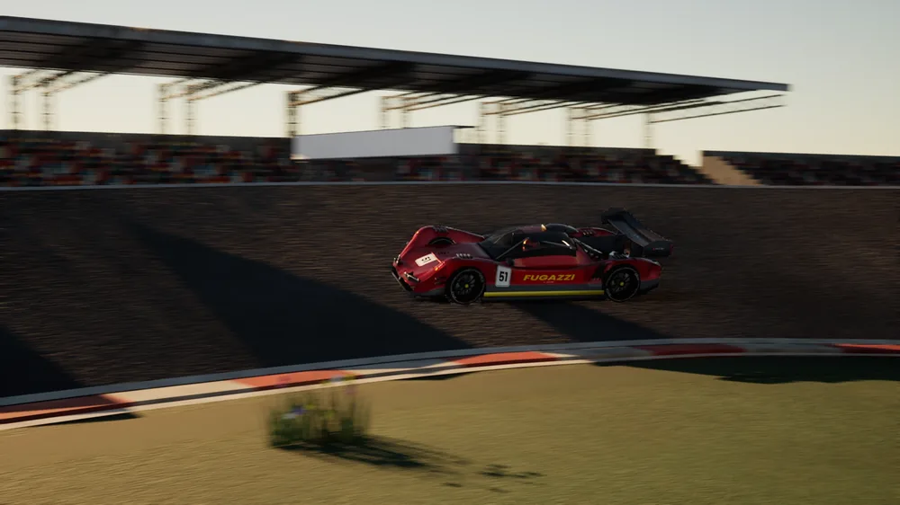
Cars lay rubber along the racing line and shed marbles beside it; rain washes both away.
Water collects in the low points of a lap, and the wheels dry a line through it.
The sun warms the road with the clock, and the tyres feel it.
Snow settles over the lap, the field packs a darker line through it, and that line can freeze when the snow stops.
The dark line, the marbles, the dry line between wet edges and the debris are all on screen.
The server runs the race the way race control would, from the start lights to the penalties.
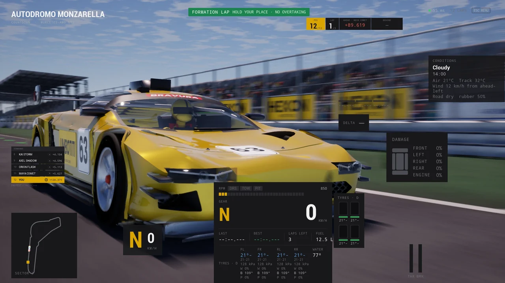
A standing start after a formation lap, or a rolling start that forms up two by two on the way to the green. A jump start is a drive-through.
Yellows go out by marshal sector for a car in trouble, blues for a car with a leader on its tail. Light panels flash them and the AI lifts under them.
Marshals wave yellow at a car stopped beside the road, and a recovery tractor drives up to it.
A car stranded on the road brings out a virtual safety car or the real one, which picks up the leader, closes the field up and lets the lapped cars by.
Passing under yellow, a red light at the pit exit or a jump start costs time, a drive-through or a stop-go, served in the lane.
Four wheels past the kerb band for a fifth of a second strikes the lap; cut the course and it goes too.
Every contact and cut goes on an incident list the results open in the replay, and a steward hands out or clears a penalty from the dashboard.
Laps or the clock, alone or as a weekend, one class or several on one grid.
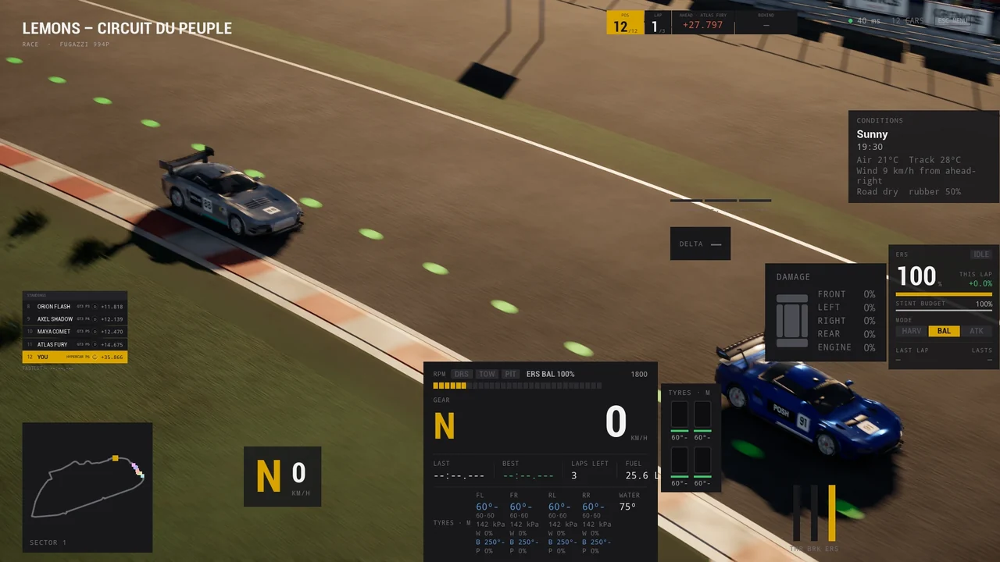
From a short sprint to a full day. When the time runs out, the leader's next lap is the last.
Practice, up to three knockout qualifying rounds and the race, each day under its own sky.
Qualify from the garage and the grid comes from the result, or drag the drivers into any order. Reverse grids too.
The quicker class starts ahead, every car is placed in its class, and the slower class is shown the blue flag.
Counted sets, a qualifying allowance, the race started on the set that set the time, parc fermé holding the setup, and a stint no longer than the rule says.
The camera pulls back over the circuit while the results fill in; click a car still running to watch it home.
A pit lane with a box per car, a limiter and a crew, on every circuit that has one.
Turn into the lane and the car is driven to its own box on the limiter, or drive it yourself with the pit aid showing the way.
Tyres, fuel, repairs, pads and discs, each taking its time. The pit panel sets what the next stop does.
A red light holds a car at the exit while traffic passes; going through it is a penalty.
The AI plans its stops for tyres, fuel, the weather and the rules, and takes a cheap one under a safety car.
Deterministic drivers in your car's class, at a level the host sets, driving the same physics you do.
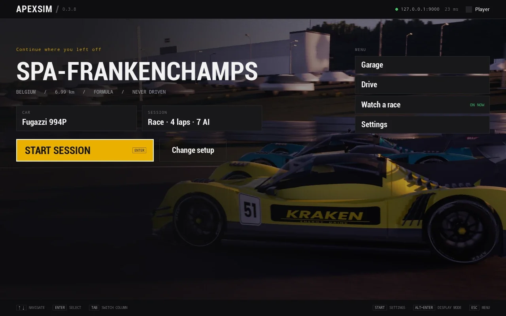
A quicker car pulls out of the tow into a braking zone and dives up the inside, or tucks back in if it is not alongside.
A car under attack covers the inside, and a backmarker moves over for the leaders.
They drive to their cold tyres, dirty air and a damaged wing, and reverse out of a barrier they end up against.
The host picks a level and the field spreads around it, from careful to quick, or a mixed field from novice to ace.
They change tyres as the track dries or wets, serve their penalties and stop under a safety car when it pays.
The steering torque is worked out on the server from the tyres, then corrected for the network on your machine.
Each front tyre's aligning moment, scrub and jacking are summed at the column: the rim goes light as the grip peaks.
Kerbs, lock-ups, flat spots and the road's own texture come through it.
The server also sends how the torque changes with the wheel, so the rim answers your hands at once rather than a round trip late.
A profile scales the forces to your base's peak torque, so a direct drive is not three times the wheel it was tuned on.
DirectInput wheels, pedals and button boxes with the steering lock matched to each car; a gamepad and a keyboard work too.
ABS, traction control, an automatic gearbox and a steering aid. The host decides what is allowed; the server enforces it.
Not one engine recording: every car's sound is synthesised from its own figures as it drives.
A crank turned at live revs fires each cylinder into exhaust banks, headers and a silencer: crossplane burble, overrun pops, gear whine.
Tyres that howl only past their grip peak, kerbs, gravel and wind.
A spotter calls the car alongside and the flags; the engineer calls the box, the fuel and the tyres.
The client renders what the server says. Every rule lives on the server, so every player races the same race.
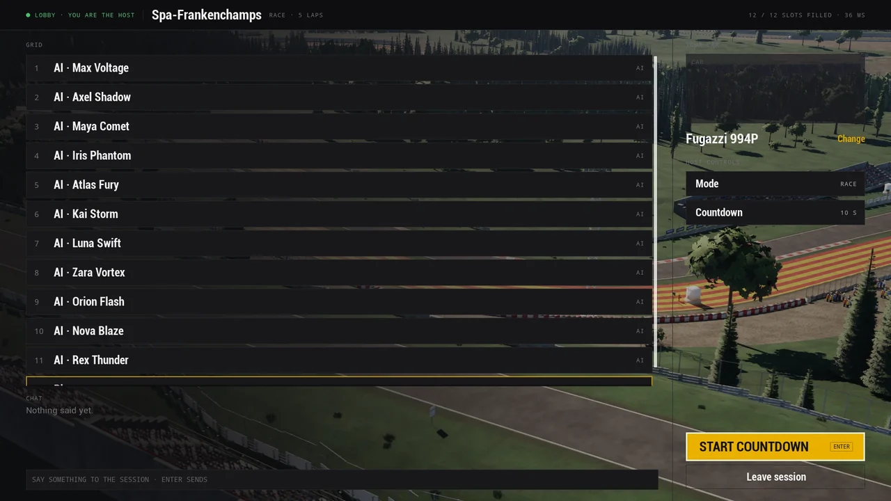
Physics, AI, collisions and timing every tick; one car's step takes a couple of microseconds.
Telemetry at 60 Hz, interpolated between samples and dead-reckoned across gaps, so motion stays smooth with nothing to reconcile.
TCP and TLS for the lobby, UDP for telemetry and input, every input datagram sealed under a per-connection key, so a forged or replayed one is dropped.
Lose the connection and your seat is held: the server drives your car on until you rejoin from the menu.
Every car and circuit carries a checksum of its source file; a player racing on different data than the server is told so.
A token-protected operator dashboard shows live timing, players, logs and performance, runs events, reviews incidents and edits the config. Health and Prometheus metrics for the rest.
Time attack with sector splits, track limits and records that survive restarts.
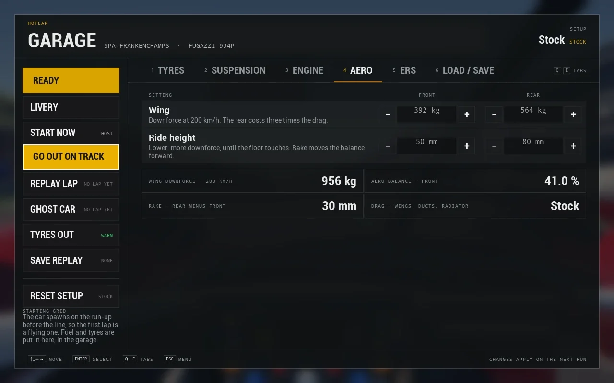
Your best legal lap per car and circuit is kept, with a ghost of it to race against and a replay from the TV cameras.
Pressures, springs, dampers, bars, wings, ride heights, gearing, brake bias and ducts, in real units: psi, N/mm, millimetres, with the downforce, balance and drag a wing change adds up to.
Driving alone, the pause menu winds the session back ten seconds, and again, up to a minute: the cars, the road and the sky go back with it and the lap is struck.
Every full lap you drive is kept as a trace; lay any two over each other by distance: speed, pedals and the time gained or lost, the record lap among them.
Several drivers can share one install, each with a licence to earn.
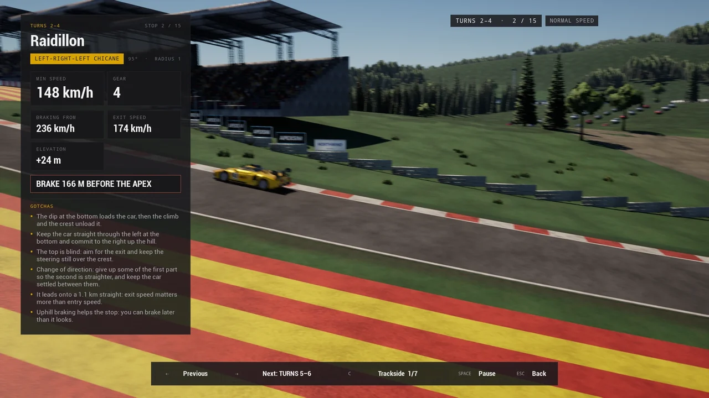
A name, a picture, your settings, your best laps and your stats, with a key that stays on your machine and proves who you are to an event's entry list.
Licence tests on every circuit: a braking test, a corner exit, a corner time and a clean lap, judged gold, silver or bronze against a car of your class.
Any circuit, corner by corner: clean laps by cars of your class from trackside, broadcast and onboard cameras, with the gear, the braking point and the speeds measured from the lap, and what the ground hides.
A championship against the AI from the menu, or race events on a server that outlive the session.
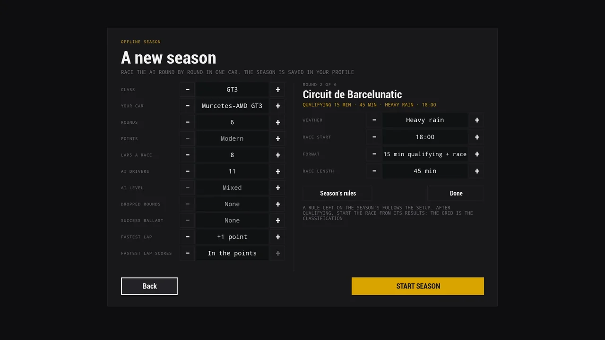
Rounds over the circuits, a points table of your choice, dropped rounds, success ballast and a point for the fastest lap; each round with its own weather, hour and format.
An entry list of drivers proved by their own key, a weekend that resumes at its next phase after a restart, and a start time that waits for nobody.
Rounds added up, with the standings in the lobby and on the results; a balance of performance per car and a results webhook for Discord.
Sessions live from the browser, replays of your own, and a broadcast director to film them.
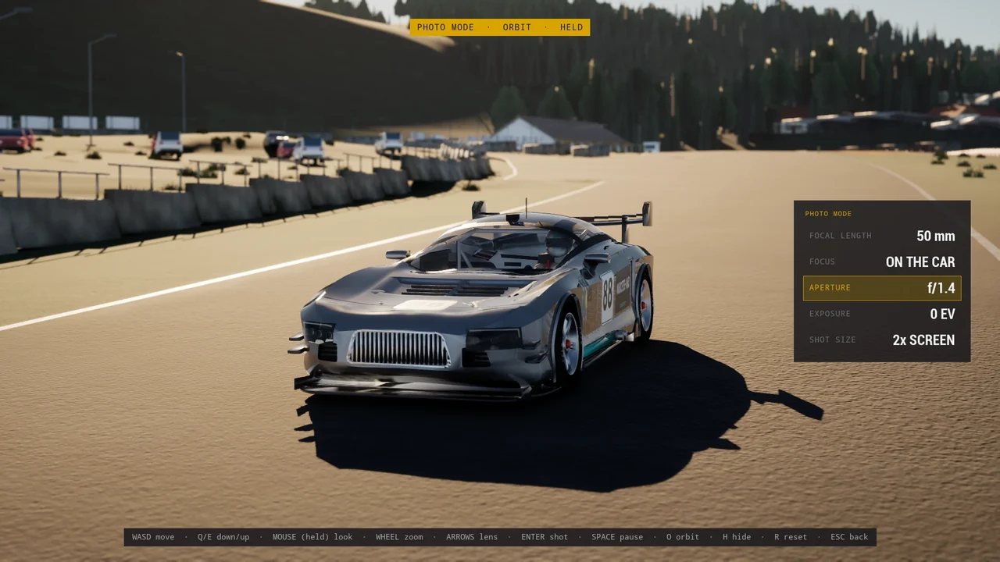
Watch a session running on the server from the browser, with a timing tower, a choice of car and camera, and the broadcast director.
Every session you drive is recorded on your machine; keep the ones worth keeping and play them paused, sped up or skipped through.
One AI car lapping any circuit on its racing line, in the car, weather and hour you pick, each corner named as it comes.
A free or orbiting camera, a lens from wide to long, aperture and exposure, and a shot at four times the screen.
Triple screens, HDR, colour-vision palettes and telemetry for the rest of your rig.
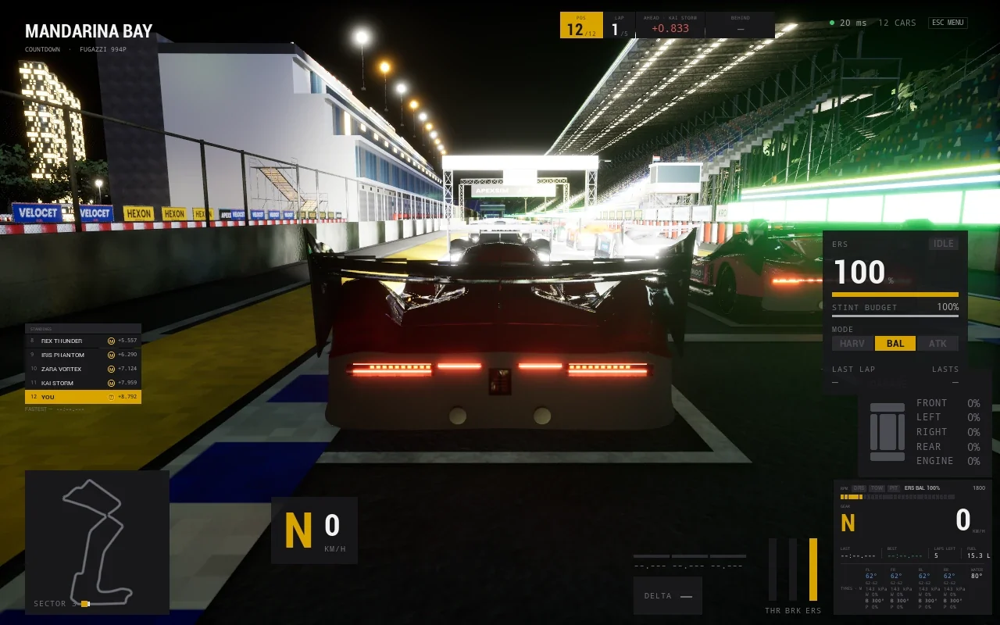
Three real views from one eye point, the side panels toed in to match your rig and the bezels allowed for; the HUD and menus stay in the middle.
Wheel, dash and mirrors built per car; seat, horizon lock and head motion are yours to set.
HDR output with its own paper white, and palettes for red-green and blue-yellow colour vision: nothing on the HUD is told in colour alone.
Motion, revs, pedals, tyres and session as a UDP packet to SimHub, a motion platform, bass shakers or a dash. Each lap's trace is a CSV, and a script turns them into a MoTeC i2 file.